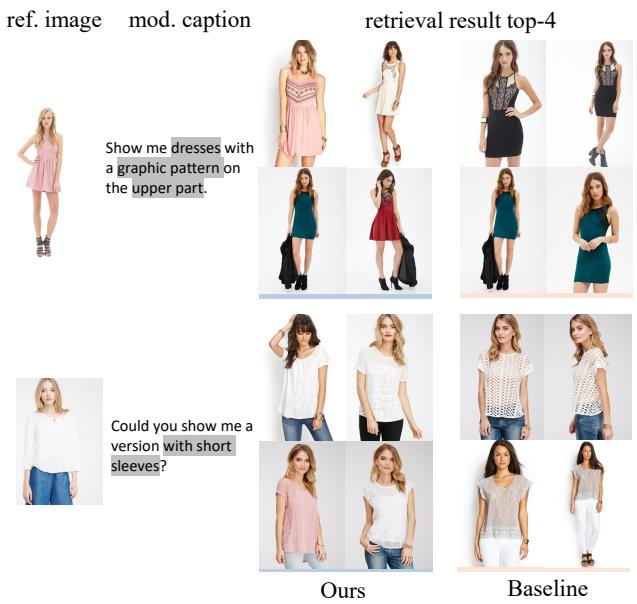

(b) V-Dict-AE self-supervised pretraining Figure 1: Overview of Pix2Key(b) V-Dict-AE self-supervised pretraining Figure 1: Overview of Pix2Key. (a) Inference pipeline: both the composed query and candidate images are converted into visual dictionaries for unified matching, followed by diversity-aware reranking. (b) V-Dict-AE pretraining: a self-supervised autoencoding objective learns compact visual-dictionary tokens by reconstructing images through a frozen generative decoder, improving fine-grained intent alignment for retrieval. The pretrained VLM can replace the captioner in the inference pipeline for dictionary extraction.这张图概括 Pix2Key 的整体方法流程。阅读时先看模块之间传递的训练信号，再看作者如何把目标拆成可优化的子问题。

Figureure 2 · : Qualitative comparison of composed retrieval resultsFigure 2: Qualitative comparison of composed retrieval results. Each example shows the reference image, the modification text, and the top-4 retrieved candidates.这张图/表用于判断 Pix2Key 的实验收益来自哪里。重点看替换、消融或跨模型设置下趋势是否一致，而不是只看单个最高分。